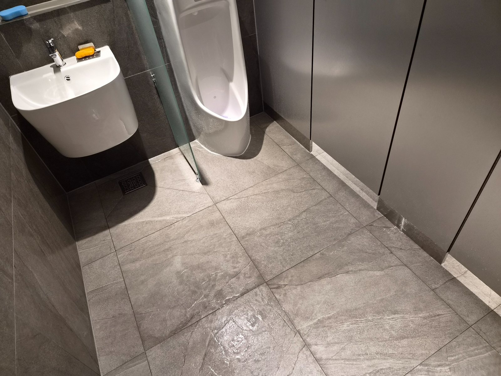
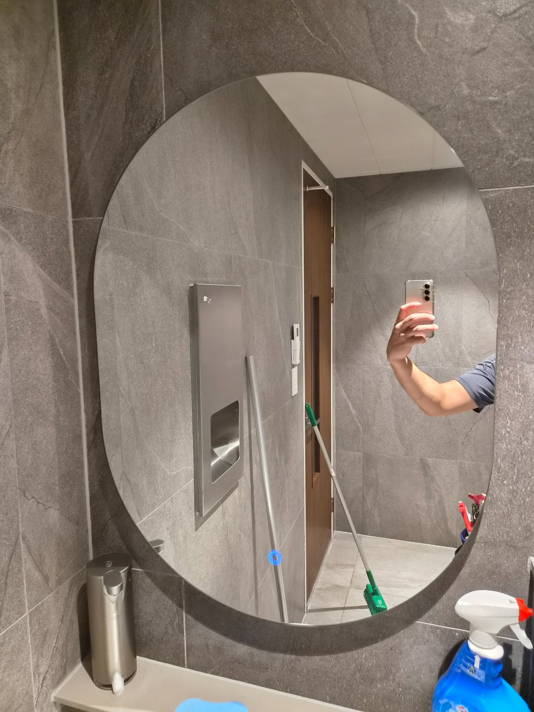
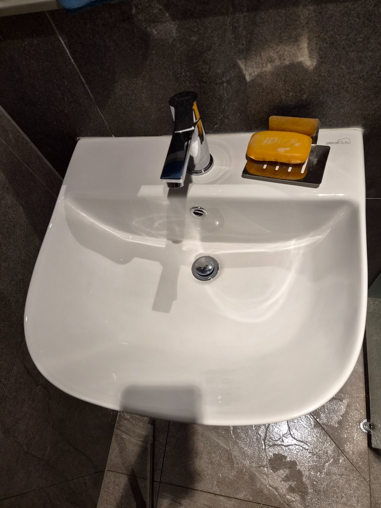
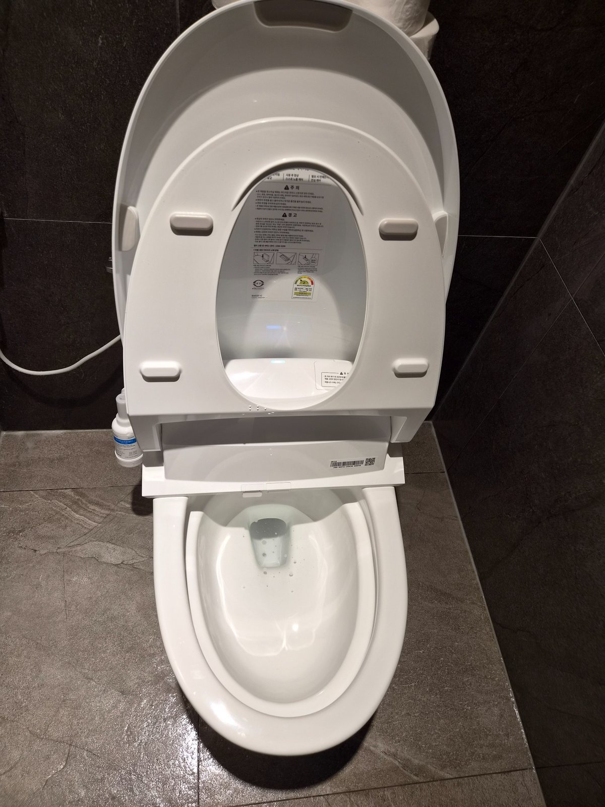

실제 현장 상태에 맞춰 관리합니다
큰 규격 타일과 밝은 위생기기는 조명에 따라 작은 물자국과 발자국도 눈에 잘 띕니다. 세면대와 수전, 거울, 소변기, 변기 주변을 순서대로 확인하고 바닥 물기까지 정리합니다.

김해 산업단지 사업장 화장실 정기청소 사례. 세면대, 거울, 소변기, 비데 변기와 타일 바닥을 정기적으로 관리해 깨끗한 상태를 유지합니다.
큰 규격 타일과 밝은 위생기기는 조명에 따라 작은 물자국과 발자국도 눈에 잘 띕니다. 세면대와 수전, 거울, 소변기, 변기 주변을 순서대로 확인하고 바닥 물기까지 정리합니다.

깔끔한 화장실은 오염이 심해진 뒤 대청소를 반복하는 것보다 현재 상태를 유지하는 정기관리 방식이 효율적입니다. 이용량과 운영시간에 맞춰 관리 주기를 정하면 전체적인 청결 상태를 안정적으로 유지할 수 있습니다.



김해 산업단지와 공단의 사무실, 공장, 화장실 정기청소를 함께 상담합니다. 필요한 공간만 선택하거나 사무실·계단·공용부와 묶어서 관리할 수 있으며 대량건도 문제없습니다.